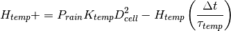
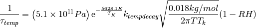

Larval habitat¶
Available larval habitat is a primary driver of local mosquito populations, and different mosquito species can have different habitat preferences. Rainfall and humidity can strongly affect available larval habitat, although this depends on the mosquito species and its particular habitat preference. For example, Anopheles funestus, which prefers more semi-permanent larval habitat, exhibits rainfall dependence, partly due to vegetation on edges of water and the interaction of rainfall with agricultural schedules for crops such as rice. Further, preference can vary within species: An. funestus exhibits differences in population responses to rainfall which are correlated with chromosomal diversity.
In addition to available habitat, mosquito populations depend on larval development and mortality rates. These in turn are affected by a variety of factors, including climate, short term weather, and densities of other larvae.
In the present model, different models for larval habitat are developed for temporary, semi- permanent, permanent, and human-driven habitats. The duration of larval development is a decreasing function of temperature, and the present model utilizes an Arrhenius temperature-dependent rate a1(a2/TK). In some cases, this temperature-dependent rate must be modified by local larval density. Rainfall and temperature then combine through habitat creation and larval development to create varying local patterns of distribution by larval instar, and larval mortality and development duration determine pupal rates.
The creation of the habitat model is described in further detail in the articles Eckhoff, Malaria Journal 2011, 10:303, Eckhoff, Malaria Journal 2012, 11:419, and Eckhoff, Am. J. Trop. Med. Hyg. 2013, 88(5). The following sections provide information regarding specific larval habitat types and how to configure these parameters in EMOD.
For a complete list of configuration parameters that are used in the malaria model, see the Configuration parameters.
Modeling mosquito life cycles and larval habitat¶
The framework facilitates simulating multiple species of Anopheles mosquitoes simultaneously. This allows for a mechanistic description of vector abundances through the effects of climate and weather on different preferred larval habitats. Each species is configured separately according to its ecological and behavioral preferences. For example, the female An. arabiensis deposits eggs primarily in temporary, rainfall-driven habitat and has a higher propensity to feed outdoors or on livestock. In contrast, An. farauti larvae live in brackish lagoons in the Solomon Islands, where lagoons fill with rain, and larvae are washed out into the ocean due to excess rain. The temporary rainfall relationship between larval habitat and rainfall cannot reproduce abrupt (sub-week) changes in biting rates, and an additional rainfall-driven larval mortality term has been implemented to capture the non-linear rain-to-habitat relationship.
Vector abundance depends on larval habitat availability
Larval habitat type determines how rainfall and temperature influence vector populations
Larval habitat types¶
The parameter Larval_Habitat_Types is a dictionary that contains one or more string and integer pairs. The user indicates the vector species, habitat type(s), and the array of scaling factors used to determine the volume of that habitat needed for larvae to develop. Note that multiple species may utilize the same habitat, with each species existing independently. The scaling factor represents the number of larvae in a 1x1-degree area. The factor multiplicatively scales the resulting weather or population dependent functional form. The following example shows how to use this parameter, using Anopheles funestus as the vector and CONSTANT as the scaled habitat type.
{
"Vector_Species_params": {
"funestus": {
"Larval_Habitat_Types": {
"CONSTANT": 10000000
},
"Acquire_Modifier": 0.2
}
}
}
The following are possible values for Larval_Habitat_Types. They are described in detail below.
- TEMPORARY_RAINFALL
- WATER_VEGETATION
- CONSTANT
- BRACKISH_SWAMP
- HUMAN_POPULATION
- LINEAR_SPLINE
Temporary rainfall¶
TEMPORARY_RAINFALL habitat corresponds to mosquitoes such as Anopheles arabiensis or Anopheles gambiae which breed primarily in temporary puddles which are replenished by rainfall and drain through evaporation and infiltration. We have developed a series of update equations for the larval carrying capacity which scale the functional form for evaporation rates. This creates a relationship in which evaporation and infiltration are higher when the weather is hot and dry.
The basic update equations appear in the article Eckhoff, Malaria Journal 2011,
10:303 and are as
follows: Temporary habitat Htemp in a grid of diameter Dcell increases with
rainfall Prain and decays with a rate  temp proportional to the
evaporation rate driven by temperature T(K) and humidity RH:
temp proportional to the
evaporation rate driven by temperature T(K) and humidity RH:


in which the exponential results from the Clausius-Clayperon relation, the root is from the expression for vapor evaporation rates due to molecular mass given a partial pressure, and the constant is the Clausius-Clayperon integration constant multiplied by a factor ktempdecay to relate mass evaporation per unity area to habitat loss.
Examining the two equations more closely, the first is a time step update equation, in which available habitat is increased by a multiple of the rainfall in the past time step, scaled by the size of the node in the simulation. For example, a 5 km square node will have 25 times the habitat of a 1 km square node. Then existing habitat decays with a time constant defined by the second equation. The basic functional form is based on an equation for evaporation rates, which is not fully realistic in that it neglects boundary layer effects. However, we are looking for a rate of habitat loss, not the rate of evaporation, and we also want to take infiltration into account. The parameter ktempdecay converts raw evaporation rates in kg/m^2/s into habitat loss per day.
The value of ktempdecay is initially chosen to set the habitat half-lives near 1 day for hot and dry conditions and 2-3 weeks for more tropical conditions. The parameter ktempdecay in the article Eckhoff, Malaria Journal 2011, 10:303 corresponds to Temporary_Habitat_Decay_Factor in the simulation configuration file, and it applies to all local species using temporary habitat. Each species in a given location can adjust the parameter ktemp from the paper, or equivalently the scaling factor value in Larval_Habitat_Types in the simulation configuration file (nested under the species name), to adjust the overall scaling of the time series. So ktemp is specific for each species, but ktempdecay is a single value for all temporary habitat species in that location. Basically, the local weather and ktempdecay set the overall time profile for larval habitat which can feed-forward into adult population levels and biting rates. ktempdecay can be adjusted to achieve a best fit for the time profile for a given location. Factors such as how sandy or clay-like the soil is will affect this value. Once the time profile is correct, ktemp can be adjusted to yield the correct annual entomological inoculation rate (EIR) for that species.
Semi-permanent water vegetation¶
The second type of larval habitat, WATER_VEGETATION, is a semi-permanent habitat, which corresponds to developing vegetation on the edges of semi-permanent habitat. This could be seen for swamp-like or rice cultivation settings, in which the development of vegetation lags the rainfall and will be closest to its peak towards the end of the rainy season. The decay is specified as a loss of habitat per day, and this slower decay constant means that species with this habitat type will tend to have a proportionately higher dry-season population relative to the temporary habitat species.
In the model, semi-permanent habitat increases with a constant KsemiDcell2Prain and decays with a longer time constant semi(Semipermanent_Habitat_Decay_Rate in the simulation configuration file). The parameter Ksemi is the scale factor value in Larval_Habitat_Types for species with a
Larval_Habitat_Types of “WATER_VEGETATION”. Permanent habitat is fixed at KpermDcell2, and human population-driven habitat is calculated as population N* Kpop.
The values of ktempdecay, semi, Ksemi, and Ktemp can be fit to local data on vector abundance by species over time or to local data on
EIR to tailor a simulation to a specific setting.
Constant habitat¶
For habitat type CONSTANT, larval carrying capacity is constant throughout the year and does not depend on weather. However, there will be a seasonal signal in adult population levels due to the effects of temperature upon aquatic development times. For a given carrying capacity, a faster development time will allow a local habitat to have a higher larval “through-put” with corresponding impacts on the adult population. The scaling factor value in the Larval_Habitat_Types parameter is used to specify the carrying capacity per unit area Dcell2.
Brackish swamp¶
The BRACKISH_SWAMP habitat setting deals with the dynamics of how rain fills a brackish swamp, how it decays and the associated parameter for rainfall-driven mortality threshold. This habitat type is observable in the Solomon Islands where an entire larval generation is flushed away as a result of the overflowing lagoon geography. Since this is the case, the TEMPORARY_RAINFALL relationship between larval habitat and rainfall cannot reproduce these abrupt changes (on 0 week timescales) of biting rates. So, an additional rainfall-driven larval mortality term has been implemented that captures the non-linear rain-to- habitat relationship. This habitat uses the same decay rate as the semi-permanent water vegetation habitat.
Rainfall-driven mortality during swamp flushing
Human population¶
The habitat type HUMAN_POPULATION scales with correlates of urban development, for example, water that is available due to water pots in urban areas. This type is configured by multiplying the number of people in the node’s population times the capacity value set in Larval_Habitat_Types. Further, climate is not involved in setting the capacity, as available water is not dependent on rainfall (it is instead dependent on human-provided water sources).
Linear spline¶
LINEAR_SPLINE is a recent addition to the types of habitat supported. Instead of specifying a habitat type, users may utilize data that tracks the number of larvae measured throughout the year to estimate the daily larval population using linear interpolation. In other words, this option enables the user to use data collected from a specific site, or create data files to match a particular location. This option does not replace the climatological parameters, but it instead adds a more flexible option in which you do not need climate data.
LINEAR_SPLINE has different syntax than the other habitat types, as the user is now required to provide a distribution of the larval population. The following example provides the syntax for configuring this habitat type:
{
"Vector_Species_params": {
"funestus": {
"Larval_Habitat_Types": {
"LINEAR_SPLINE": {
"Capacity_Distribution_Per_Year": {
"Times": [0.0, 60.833, 121.667, 182.5, 243.333, 304.167],
"Values": [0.0, 0.0, 0.2, 1.0, 0.5, 0.0]
},
"Max_Larval_Capacity": 10000000000.0
}
}
}
}
}
Modifying habitat availability¶
Ultimately, habitat is configured in order to create mosquito populations that realistically emulate observed entomological inoculation rate (EIR). Briefly, available habitat is directly related to mosquito abundance, and mosquito abundance in turn is directly related to biting rate. In order to calibrate the model there are several options for configuring habitat. You can first set habitat parameters and modify them directly using the habitat scalar and decay rate. Then, after those initial parameters are set, you can modify habitat with overall scaling parameters.
Habitat scalars and decay rates¶
The following two figures demonstrate the effects of varying the habitat scalar (Larval_Habitat_Types) and the Temporary_Habitat_Decay_Factor (ktempdecay) for a single species with temporary habitat. Changing the habitat scalar will scale the resulting adult population size and biting rate by a similar factor.
Effect of varying the habitat scalar, Larval_Habitat_Types
Lowering ktempdecay causes the resulting rainfall-driven habitat to decay at a slower
rate and thus increases temp. A slower decay rate will result in higher
larval habitat on average, and higher resulting adult population biting rates.
Effect of varying the decay rate, Temporary_Habitat_Decay_Factor (ktempdecay)
These two parameters can be co-varied to produce an appropriate temporal profile. If rainfall is constant, there is only one degree of freedom, as the habitat is always at equilibrium. The two degrees of freedom become important when there is a distinct rainy season. For example, scaling habitat produces the same ratio between biting rates in the wet season and dry season as seen in Effect of Varying Habitat Scalar.
However, when varying the decay rate, the ratio between habitats is different in the wet season versus the dry season. As seen in the graph “Effect of Varying Temporary Habitat Decay Scalar”, a given ratio in rainy season will become exaggerated in the start of dry season (with a higher ratio the drier the season), as the slower decay rate extends habitat longer into the dry season.
Overall scaling¶
Often, it is desired to study a similar location, with the same species, temporal profile, etc., but with a different annual entomological inoculation rate (EIR). EIR depends not only on climate, but on larval habitat availability as well. So as an alternative for modifying all climate and habitat parameters to change EIR, it is simpler to use the habitat scaling parameter, x_Temporary_Larval_Habitat found in the configuration file. This parameter will scale all habitat parameters without changing the temporal dynamics, so that a new transmission is achieved with the same ratios among the species, and same time profile. For example, setting x_Temporary_Larval_Habitat to 0.1 would simulate low EIR (or a low transmission setting) by reducing available habitat to 10%; a value of 1 could be used to simulate high EIR (or a high transmission setting), and there would be no reduction in available habitat.
An alternative to x_Temporary_Larval_Habitat is LarvalHabitatMulitpilier. LarvalHabitatMultiplier is a parameter in the demographics file, and can be applied to all habitat types configured for the simulation, specific habitat types, or individual mosquito species within particular habitat types in the Nodes array of the demographics file (see NodeAttributes in Demographics file structure and parameters). The following example shows the syntax:
{
"Nodes": {
"NodeID": 340461476,
"NodeAttributes": {
"LarvalHabitatMultiplier": 10.0
}
}
}
It should be noted that LarvalHabitatMultiplier enables habitat availability to be modified independently for each species within a shared habitat. This is an upgrade over previous versions of EMOD in which the modifier would be applied equally to all species within a shared habitat.